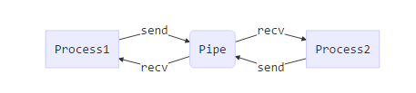
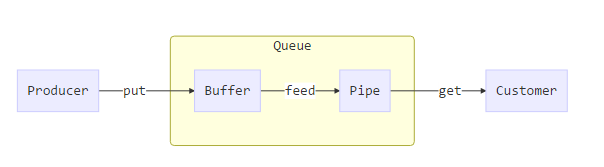
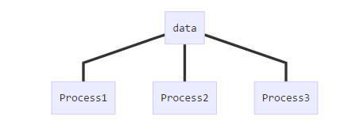

之前写过java，C++ 等程序，接触到python后如果想写一些需要大量计算的程序，首先想到的可能会是一个多线程程序。但是……
threading模块和multiprocessing模块
在python中threading模块用于处理多线程问题，但是由于Python的GIL（全局解释锁），导致python中的多线程不能利用多核CPU。通过实际coding可以发现，python中使用threading实现的多线程计算程序实际上最多只能使用一个CPU核心 ，所以对于需要大量计算的应用来说，threading模块实际起不到什么作用。
计算机程序可以分为 计算密集型 和 IO密集型 两种：
通过以上分析可以发现，threading模块由于不能充分利用多核CPU，所以对于计算密集型的程序是没有意义的。
但是对于IO密集型程序，threading模块却能够利用CPU的性能。如果程序中需要进行大量的网络传输或者文件读写等IO操作时，由于计算机IO的速度远没有CPU处理数据的速度快，所以必然会出现CPU等待IO完成的现象，如果在一段代码处在等待IO时执行其他待执行的代码，必然能够加快程序的执行速度并充分利用CPU。
所有threading模块对于IO密集型程序有优化作用，对于计算密集型的程序基本没有什么作用。
对于 计算密集型的程序，python使用的是multiprocessing，即多进程。下文整理python的多进程使用方法。首先认识进程对象Process。然后进程安全机制。进程池pool的使用。
Process
初始化
1 | class multiprocessing.Process(group=None # 为了和Threading保持统一，此处无用 |
关键函数：
start() # 开始执行
is_alive() #
join([timeout]) #
terminate() # 终止
exitcode # 属性，表明该进程退出的状态, 状态值的含义 https://docs.python.org/2/library/signal.html
实例：
1 | from multiprocessing import Process |
进程之间传输数据
（Exchanging objects between processes）
有两种进程之间通信的方式Pipes和Queues。
Pipe()两个进程之间的通信queue多生产者和多消费者之间通信。包括Queue,multiprocessing.queues.SimpleQueue和JoinableQueue三种
注意：Pipe()， 和 queue 只能用于Process之间的通信。不用用于Pool管理的进程之间的通信
Pipe

定义：
1 | Pipe(duplex=True) # 通过查看源码可以发现，Pipe实际上是一个函数 |
传输的数据对象可以使用pickle进行序列化时
send(obj)将obj使用pickle序列化后送入pipe通道recv()接受send(obj)发送的pickle序列化数据，并解析成原始的obj对象。如果pipe中没有数据时，该函数会阻塞其所在进程，直到接收到新的数据.
如果传输的对象不能使用pickle序列化，可以使用如下方法以byte进行传输：
send_bytes(buffer[, offset[, size]])recv_bytes([maxlength])recv_bytes_into(buffer[, offset])
1 | from multiprocessing import Process, Pipe |
Queues
用于进程间通信的还有队列，多进程的队列对象实际上是对Pipe的封装。存在如下三个队列类。
1 | multiprocessing.Queue # 对Pipe的封装 |
Queue
使用Queue将数据从生产者传输到消费之的流程如下。

如上所述，Queue 实际上是对Pipe的封装，但是当生产者将数据放入Queue时，不是直接放入Pipe中，Queue使用了一个缓冲区Buffer 。put函数先将数据放入Buffer中，再由一个专门的feed线程将其放入Pipe当中。消费之则是直接从Pipe中get对象。
定义：
1 | Queue([maxsize]) # 队列同时能容纳的对象的数量 |
关键函数：
- 使用标准库中的
Queue.Empty和Queue.Fullexceptions 来判断队列是否已经满了，用在put函数中。也可以使用如下两个函数，但是不可靠。empty()、full()
put(obj[, block[, timeout]])
将obj添加到Queue中。如果队列已满，则阻塞该进程timeout长时间，如果timeout时间以后队列还是满的，则产生异常Queue.Full。block默认True，timeout默认无穷大(None)。block为False时，如果队列是满的直接产生异常Queue.Full。
put_nowait(obj)等价于
put(obj, block=False).
get([block[, timeout]])
从队列中取出一个对象。如果队列是空的则阻塞该进程timeout长时间。如果timeout时间以后队列还是空的，则产生异常Queue.Empty。block默认True，timeout默认无穷大(None)。block为False时，如果队列是空的直接产生异常Queue.Empty。
get_nowait()等价于
get(block=False).
由于队列中feed线程的存在，Queue使用如下三个函数来对其进程处理。（标准库中的队列没有如下三个方法）
close()
该进程不在向队列中写入数据，并调用join_thread()，将buffer中的数据写入Pipe
注意：只能在生产者端使用。如果在消费者端使用，则消费之不能从队列中get数据。但是生产者仍然可以写入数据。
join_thread()join
feed线程，等待buffer中的数据写入Pipe
cancel_join_thread()假设消费者不在消费数据，则由于
join_thread()可能带来一些死锁问题，即，Buffer的数据无法写入Pipe中。这时可以使用cancel_join_thread()来终止feed线程。注意：此时buffer中的数据将会丢失。
实例：
1 | import time |
JoinableQueue
multiprocessing.Queue是模仿标准库中的队列写的，但是没有task_done() 和 join() 方法。JoinableQueue继承了multiprocessing.Queue并实现了task_done() 和 join() 方法。
task_done()
由队列的消费者调用。消费则调用get()得到一个队列中的数据(任务)，处理完成这个数据以后，调用task_done()告诉队列该任务已经处理完毕。队列中的每一个对象都对应一个task_done()。
join()
阻塞调用进程，直到队列中的所有数据(任务)被消费掉。当有数据被加入队列，未完成的任务数就会增加。当消费者调用task_done()，意味着有消费者取得任务并完成任务，未完成的任务数就会减少。当未完成的任务数降到0，join()解除阻塞。
实例
1 | import time |
Synchronization机制
(多进程同步操作共享资源)
Lock()
在多进程python程序中只有一个进程执行，并阻塞其他进程。
应用场景：当多个进程需要操作共享资源的时候，使用Lock来避免操作的冲突。
如下面例子，10个进程同步写入文件。当一个进程进程开始写入时（即lock.acquire()执行后），阻塞其他进程的操作。直到该进程执行lock.release() 后，其他进程才能进行写入。
1 | import multiprocessing |
进程间共享数据
共享内存

应用场景举例：比如我想使用一个多进程程序统计一个文件夹下所有文件的行数（每个进程一次统计一篇文章的行数）。如上图所示，多个进程同时读写同一个资源。
Python多进程机制使用的是从内存中申请一块内存，让所有的进程能够同时读写这块内容。 multiprocessing提供了multiprocessing.Value 和multiprocessing.Array 来作为共享内存。
multiprocessing.Value 和multiprocessing.Array 是进程安全的，所以不用使用lock。
实例：
1 | from multiprocessing import Process, Value, Array |
注意：上面Value和Array的定义方式。Value 和 Array 都需要设置其中存放值的类型，d 是 double 类型，i 是 int 类型，具体的对应关系在Python 标准库的 sharedctypes 模块中查看。如有需要请参考https://docs.python.org/2/library/multiprocessing.html#module-multiprocessing.sharedctypes。
共享进程
使用一个进程来管理需要在多进程中共享的数据。其他进程可以对其管理的数据进行操作。如下图所示：
为了理解multiprocessing使用一个进程来共享数据的机制，我们需要理解如下四者的关系：
class multiprocessing.managers.BaseManager([address[, authkey]])
Proxy
class multiprocessing.managers.SyncManager ：是一个已经注册了常用共享对象的 BaseManager， 是BaseManager的子类
multiprocessing.Manager() ：是一个能够返回 已经start的
SyncManager对象的函数
BaseManager是用来管理共享对象的进程，通过对外开放代理 Proxy 使得其他进程在进程安全的情况下操作共享对象。
BaseManager 关键函数:
1 | class multiprocessing.managers.BaseManager([address[, authkey]]) # address BaseManager进程运行的host的ip:port ; authkey: 密码 |
用于初始化 BaseManager 对象。
该方法需要在两个地方使用：
- Manager的初始化，初始化之后使用
start()启动 manager - 当有以个进程需要方位manager管理的对象时，需要使用该函数初始化 Manager，其 address 和 authkey 需要和被访问的 manager相同。初始化后使用
connect()连接
1 | start([initializer[, initargs]]) |
Start a subprocess to start the manager. If initializer is not None then the subprocess will call initializer(*initargs) when it starts.
1 | get_server() |
返回 manager 对象，manager 对象可以使用 serve_forever() 启动manager
1 | connect() |
连接 manager
1 | shutdown() |
Stop the process used by the manager. This is only available if start() has been used to start the server process.
1 | register(typeid[, callable[, proxytype[, exposed[, method_to_typeid[, create_method]]]]]) |
用于注册代理 。注册一个获取manager所管理对象的proxy。具体使用方法见例子
typeid：用户获取被管理对象的proxy
callable是一个能够返回需要管理对象的函数
实例：使用一个master进程分发任务，slave进程用于处理任务并将任务返回。master和slave使用manager通信
1 | import random, time |
1 | import time, random |
进程池Pool
Pool
定义：
1 | class multiprocessing.Pool([processes[, initializer[, initargs[, maxtasksperchild]]]]) |
关键函数：
apply_async(func[, args[, kwds[, callback]]])
callback: 回调函数，当task执行结束以后，处理返回值。
用于传递不定参数，它是 非阻塞的且支持结果返回后进行回调。
map(func, iterable[, chunksize])
是内置函数map的多进程版本，在所有的task执行完成之前会阻塞主进程
map_async(func, iterable[, chunksize[, callback]])
是map的变体，它是 非阻塞的。但是如果传入了callback，当子进程结果ready以后，callback会执行并阻塞主进程(func是在子进程中异步执行的)。callback是在主进程中执行的。
imap(func, iterable[, chunksize])
itertools.imap()的多进程版本。返回IMapIterator迭代器对象
imap_unordered(func, iterable[, chunksize])
和imap功能相同，但是其结果是无序的。返回IMapUnorderedIterator 迭代器对象
close()
执行该函数后，pool中不能再加入新的task
terminate()
直接终止进程池中的所有task，如果有未执行结束的task，其结果将会丢失。
join()
等待所有task结束，阻塞主进程。执行join()之前必须先执行close()否则会出错。
AsyncResult& MapResult
1 | class multiprocessing.pool.AsyncResult |
Pool.apply_async() 返回结果保存在AsyncResult对象中，AsyncResult接收异步结果。
get([timeout])
获取进程执行的结果，如果结果没有available，则阻塞主线程并直到 result is available或者timeout。
wait([timeout])
等待进程返回结果。等待时阻塞主线程，直到 result is available或者timeout。
ready()
返回boolean值，表示进程是否已经返回结果
successful()
和read()作用相同，但是如果未ready则会产生异常
1 | class MapResult(ApplyResult) |
Pool.map_async()返回结果保存在MapResult对象中，MapResult继承自ApplyResult对外提供get、wait、ready和successful四个方法。MapResult接收异步结果。
其中get() 获取的是多个进程结果组成的list的对象。
IMapIterator&IMapUnorderedIterator
imap,imap_unordered返回的结果对象
next([timeout])
用于迭代获取下一个result
实例：
close() 、 terminate()、 join()的使用
1 | import multiprocessing |
apply_async、 map、 imap、 imap_unordered
1 | import multiprocessing |
imap、 imap_unordered结果迭代器
1 | import multiprocessing |
回调函数的使用
1 | import multiprocessing |
杂项
multiprocessing.active_children()Return list of all live children of the current process.Calling this has the side effect of “joining” any processes which have already finished.
multiprocessing.cpu_count()Return the number of CPUs in the system. May raise
NotImplementedError.
multiprocessing.current_process()
Return theProcessobject corresponding to the current process.
参考资料
multiprocessing— Process-based “threading” interface
使用进程共享实现机器之间通信